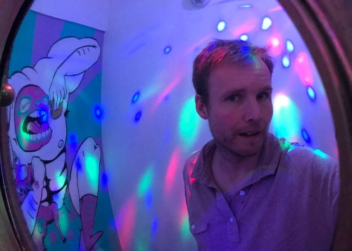

About
This is the long suffering website of Chris Keene. I’m based in Brighton, UK. nostuff.org has been my home on the web since around 2002.

My background is in technology within higher education, especially around research and libraries.
This website goes somewhat through a boom and bust cycle. The latter currently being the case (and arguable always has been, hence the name).
You will find a collection of quite old articles in something that looks suspiciously like a blog.
You can also find me at:
- Bluesky: @chriskeene.bsky.social - this is really the only site I post to.
- The site we use to avoid the hell site: mastodon.social/@chriskeene
- Threads: @chriskeene1
- Some random photos on insta @chriskeene1
- Formely on the site which we don’t use any more (the everything app): @chriskeene
- You can contact me by email hello @ ck12.uk